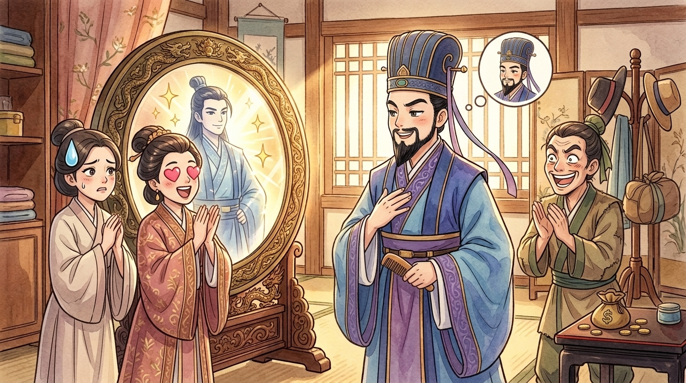
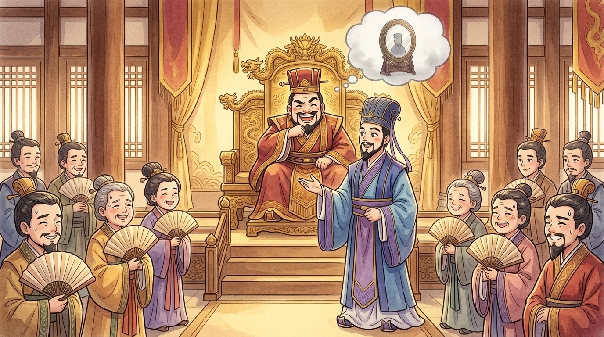
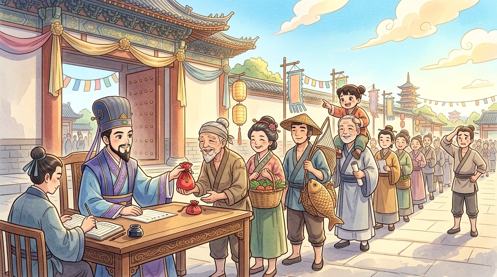

Polished bronze, at your service. I am the mirror (鏡子) that hung in the dressing room of Minister Zou Ji (鄒忌) of Qi (齊), and let me tell you my professional secret: of everything in that great house — the servants, the guests, the family — I was the only one whose job was telling the truth.1 Everyone else told my master what he wanted to hear. This is the story of the morning he noticed — and how one man's haircut-mirror moment ended up making a whole kingdom strong. Lean in. Mind the fingerprints.
🪞 The dangerous question
My master was, I'll grant it, a fine-looking man — tall, elegant, beard like brushed silk. One morning, robed and capped, he studied himself in me and asked his wife the question every mirror dreads: "Who is more handsome (英俊) — me, or Lord Xu (徐公) of the north city?" Lord Xu, you must understand, was the acknowledged beauty of the whole state of Qi. And the wife answered instantly: "You, of course! Immensely! How can Lord Xu compare?"
I said nothing. Mirrors can't sigh, or I would have. Bronze does not flatter, little reader — but bronze also cannot interrupt, which on mornings like this one feels like a serious design flaw.
Not satisfied, he asked his concubine. "Lord Xu is nothing beside you, master!" He asked a visiting guest, who had come hoping to borrow money: "Lord Xu? Handsome? Beside YOU? Ha!" Three votes, all for my master. He straightened his cap and smiled at me. I reflected the smile. It's my job. But I remember thinking, in my flat bronze way: wait for it…

🪞 Enter the actual answer
The very next day, fate — which has a sense of humour — brought Lord Xu himself to visit. My master studied his guest the whole visit, sideways, the way you check your answers against the top student's. And after the door closed he came straight to me, looked long and honestly into the bronze, and said the sentence I'd been waiting years to hear:
He lay awake that night — I could see the lamp burning — and by morning he had the answer, polished and complete: "My wife praised me because she loves me. My concubine praised me because she fears (害怕) me. My guest praised me because he wanted something from me." Love, fear, and wanting — the three great fog machines. Not one of the three had lied to be wicked. But not one had told the truth (真話).2
Another man would have shrugged and enjoyed the compliments. My master stood very still — and then said something that made me proud to be his mirror: "If MY little household fogs up this badly over a face… what must be happening around the KING?"
🪞 A mirror for the whole kingdom
He went to the palace that very day. And instead of lecturing King Wei (齊威王) — kings famously enjoy lectures the way cats enjoy baths — my clever master simply told the story you just heard: the wife, the concubine, the guest, handsome Lord Xu. The king chuckled. Then Zou Ji delivered the polish: "Sire — your palace ladies all love you. Your courtiers all fear you. And every single soul in the kingdom wants something from you. If my three gave me a foggy mirror… yours, Majesty, must be COMPLETELY blind." (王之蔽甚矣 — "Your Majesty is deeply deceived.")3
Silence in the throne room, my cousins there tell me. The flatterers held their breath — this was either the end of Zou Ji or the end of easy mornings. And King Wei — to his everlasting credit — laughed, and said one word: "Good." Then he issued the strangest royal decree in the state's history: rewards (獎賞) for criticism (批評)! Top prize for scolding the king to his face; middle prize for criticism in writing; and even for grumbling about the king in the marketplace — if it reached the royal ears, a reward.

🪞 The kingdom looks at itself
What happened next, the old books describe like a market fair: in the first weeks, the palace gates were CROWDED with people queueing to criticize the king — taxes here, a lazy governor there, a stupid rule, an unfair judge. The king listened, paid up, and FIXED things. After some months, the queue thinned: complaints now arrived only occasionally. And by the end of the year, says the record, people came wanting to complain… and could find nothing left to complain about.4
And here is the ending that gave the story its fame. The neighbouring states — Yan (燕), Zhao (趙), Han (韓), Wei (魏) — watched Qi repair itself at top speed, gulped, and came to pay their respects without a single arrow flying. The old books close with a line scholars adore: "This is called winning the war at court" (此所謂戰勝於朝廷) — defeating your rivals not on a battlefield, but by fixing your own house until no one dares test it.

🪞 What the mirror knows
Now, small human standing in front of me — yes, you — a word from the only witness who never flatters. Everyone in this story was ordinary. An ordinary vain morning, ordinary kind-hearted fibs, an ordinary king who liked applause. What was EXTRAordinary was the sequence: my master heard sweet words, met the truth, and chose the truth — then walked into a palace and risked his neck to hand that truth to power. And a king heard an uncomfortable thing… and said "Good."
So here is my bronze advice, and I have reflected on it for 2,300 years: praise (讚美) is warm, but it fogs. When your test score, your match result, or your honest friend shows you something less flattering than you hoped — don't smash the mirror. The people who tell you comfortable things may love you; but the ones who tell you TRUE things are the ones who make you better. Be brave enough to hear them. Be braver still, and be one. …Now straighten your collar; you've been talking to a mirror. 🪞